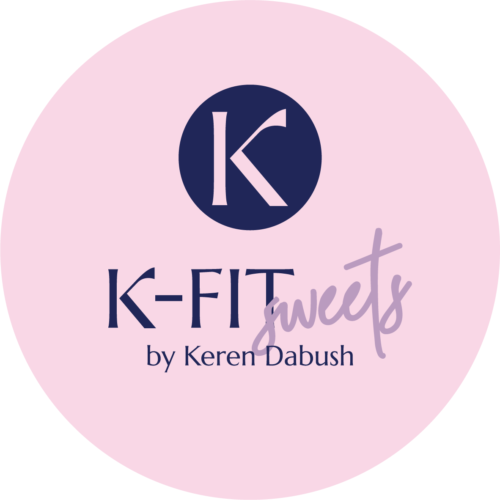

01
אבחון והגדרת יעד
נבין איפה את נמצאת היום, מה המטרה ומה באמת אפשרי בתוך הלו״ז שלך.
K-FIT by Keren Dabush
תוכניות אימון, תפריטי תזונה ומעקב אישי — הכל במקום אחד, בקצב שמתאים לחיים שלך.

בונים הרגלים שמחזיקים לאורך זמן בלי קיצוניות ובלי לוותר על החיים.
השיטה
נבין איפה את נמצאת היום, מה המטרה ומה באמת אפשרי בתוך הלו״ז שלך.
אימוני כוח, חיטוב וסיבולת — לבית או לחדר כושר, לפי רמה וזמינות.
ארוחות פשוטות, גמישות ומאוזנות, עם התאמות לפי העדפות, מטרה ורגישויות.
למי זה מתאים?
מסלולי K-FIT
כל מסלול ניתן להתאמה אישית אחרי שיחת התאמה קצרה.
תוכנית אימונים מסודרת להתחלה חזקה.
אימון ותזונה בליווי אישי ומעקב שבועי.
ליווי צמוד למי שרוצה מסגרת מלאה.
תפריטי תזונה
התפריטים בנויים לפי העדפות אישיות, זמני ארוחות, שגרת עבודה, אימונים ויעד — ירידה באחוזי שומן, חיטוב, עלייה במסת שריר או שמירה.
איך זה עובד?
מכירות קצרות, מטרות, מגבלות והעדפות.
אימונים ותפריט לפי יעד ורמת ניסיון.
בודקים התקדמות, משנים ומדייקים.
הופכים את התהליך להרגל שנשאר.

״המטרה היא לא להיות מושלמת. המטרה היא להתמיד, להתחזק ולהרגיש טוב בגוף שלך.״Keren Dabush
שאלות נפוצות
לא בהכרח. ניתן לבנות תוכנית לבית או לחדר כושר בהתאם לציוד שיש לך ולמטרה.
זה תלוי בנקודת הפתיחה ובהתמדה. בדרך כלל מרגישים שינוי באנרגיה ובשגרה כבר בשבועות הראשונים.
כן. התפריט נבנה לפי העדפות, רגישויות, סדר יום ויעדים.
במסלולי הליווי יש מעקב והתאמות. המטרה היא לא להשאיר אותך לבד מול התהליך.
בואי נתחיל
הטופס סטטי ונפתח ישירות לווטסאפ עם הודעה מוכנה.